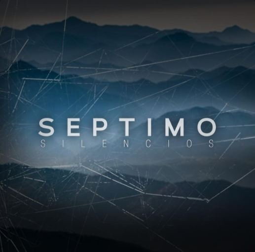
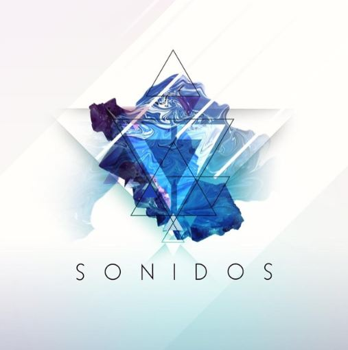
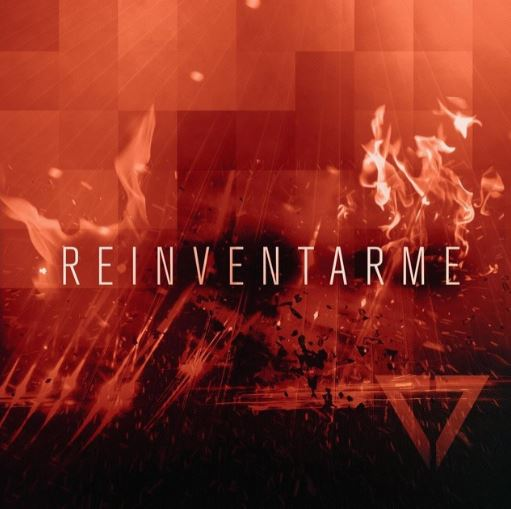
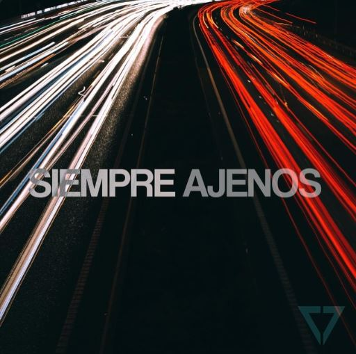
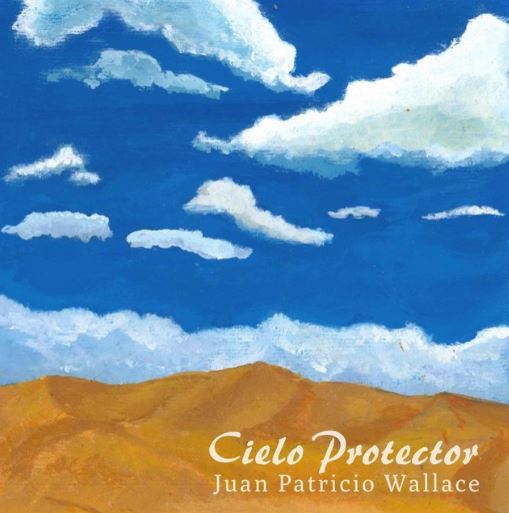
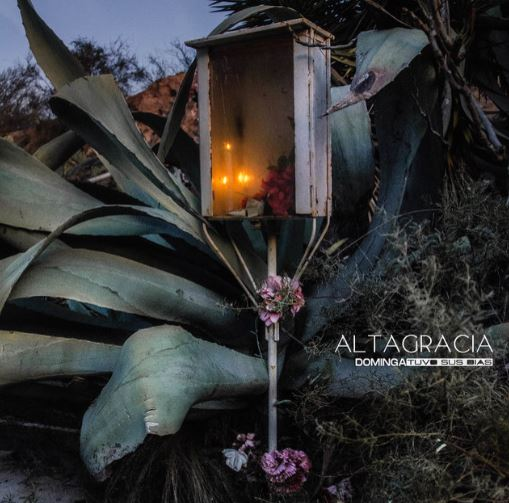
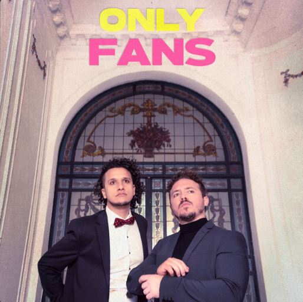

Trabajos

Silencios - Septimo
Guitarra
Producción

Sonidos - Septimo
Guitarra
Producción
Edición

Reinventarme - Septimo
Guitarra
Producción
Edición

Siempre Ajenos - Septimo
Guitarra
Producción
Edición y Mezcla

Cielo Protector - Juan Patricio Wallace
Producción
Ing. Grabación
Mezcla y Mastering
Sé (Single) - Tiempo
Asist. Grabación

Alta Gracia - Dominga Tuvo sus dias
Asist. Grabación
Edición

Only Fans - Enfermera
Asist. Grabación